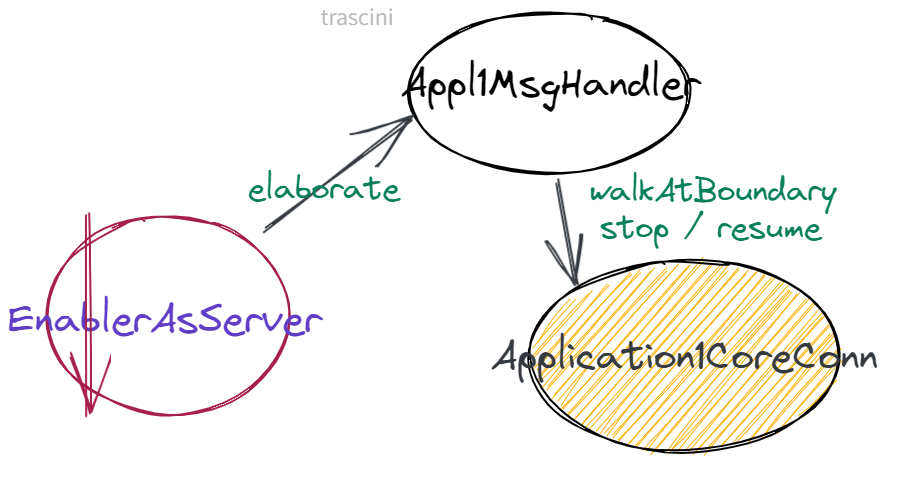
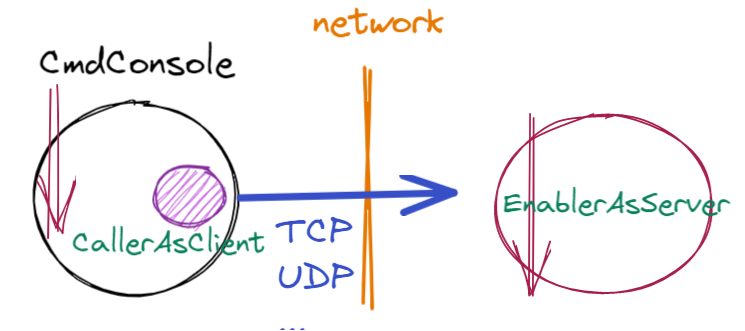
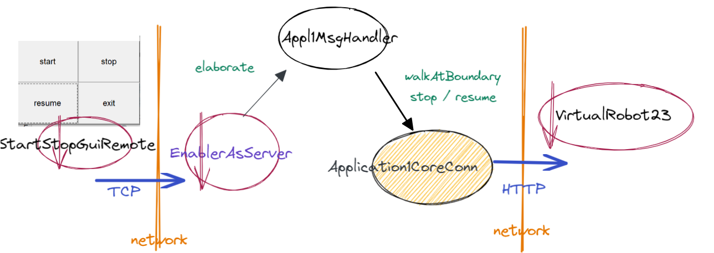

Appl1-HTTPSprint3¶
Nello Appl1-HTTPSprint2, abbiamo costruito e testato un sistema che soddisfa i requisiti del core-businness in ambiente locale, la cui architettura è schematizzata in figura:

La classe Appl1Core osservabile realizza la logica applicativa.
Requisiti SPRINT3¶
In questa nuova fase dello sviluppo, dobbiamo superare le limitazioni che ci siamo imposti in precedenza, tenendo conto di quanto già osservato in Appl1: Natura dei componenti della Appl1: Architettura logica.
L’archittura logica di riferimento può ora essere rappresentata come segue:

In particolare detto P uno dei protocolli definiti in ProtocolType:
L’applicazione Appl1 viene ora concepito come un ente attivo capace di ricevere messaggi (comandi
start/stop/resume) viaPe interpretare tali messaggi, convertendoli in comandi a Appl1Core (e di qui a VirtualRobot23).CmdConsole deve diventare un ente attivo che interagisce con un utente umano e che invia comandi ad
Appl1usando il protocolloP.
La fase di interpretazione dei comandi è affidata a Appl1 in quanto:
la CmdConsole è solo un dispositivo di input, che si vuole mantenere libero da aspetti applicativi;
Appl1 potrebbe ricevere comandi da dispositivi diversi dalla CmdConsole.
Dobbiamo dunque:
Affrontare il progetto e la realizzazione della CmdConsole remota.
Affrontare il progetto e la realizzazione di un sistema distribuito.
Siamo di fronte a un passaggio logico da sistemi ad oggetti locali che interagiscono mediante procedure-call a sistemi a componenti distribuiti attivi che interagiscono a messaggi attraverso l’uso di vari protocolli, come quelli introdotti in unibo.basicomm23.msg.ProtocolType.
Per evitare che l’application designer debba occuparsi di dettagli implementativi legati alle interazioni, possiamo intreprendere una strada che trae ispirazione dal un altro dei principi SOLID, secondo il quale:
Seguire questa via significa anche che il nostro approccio passa:
In altre parole, è il livello applicativo (il problema stesso) che deve dire di quali elementi astratti (interfacce) o concreti ha bisogno per realizzare operazioni di più basso livello (come le comunicazioni di rete) e demandarne la realizzazione a opportuni supporti che realizzino quanto dichiarato.
introdotti in Interazioni dal punto di vista applicativo.
: Interaction.
Lo schema logico viene reimpostato come segue:

Astraendo ancora possiamo evidenziare che l’applicazione richiede qualche supporto per realizzare le interazione punto-a-punto CmdConsole-Appl1 e Appl1-VirtualRobot.

L’idea di Interconnessione¶
Con Interaction2021 indichiamo un canale di comunicazione bidirezionale tra due end-points, cioè un ente capace di realizzare il concetto astratto di Interconnessione.
Il contratto che il livello applicativo fissa in relazione al questo concetto, viene formalizzato dalla seguente interfaccia.
unibo.basicomm23.interfaces.Interaction2021¶
interface Interaction2021 {
public void forward( String msg ) throws Exception;
public String request( String msg ) throws Exception;
public void reply( String msg ) throws Exception;
public String receiveMsg( ) throws Exception;
public void close( ) throws Exception;
}
Ogni metodo rappresenta una modalità di invio (forward/reply/request)
o di ricezione (receiveMsg) di informazione.
Dalla specifica alla realizzazione¶
. L’insieme degli elementi (astratti e non) che il livello applicativo assume di avere a disposizione per inviare e ricevere messaggi viene descritto in Interaction2021 che descrive anche la Natura e struttura dei messaggi applicativi.
. I supporti che realizzano l’idea di Interconnessione con i diversi protocolli menzionati in ProtocolType sono realizati e descriiti in unibo.basicomm23.
Il progetto unibo.basicomm23 fornisce i seguenti supporti (che si possono vedere come enti abilitatori alle interazioni via rete):
EnablerAsServer (Su
8030), che permette la ricezione di messaggiCallerAsClient, che permette l’invio di messaggi
EnablerAsServer¶
|  |
|
{kind=link}
CallerAsClient¶
|  | CallerAsClient stabilisce una Interconnessione con un server remoto, avvalendosi di una ConnectionFactory. |
{kind=link}
Interazioni Appl1->robot¶
La classe unibo.supports.VrobotHLMovesHTTPApache
può essere ridefinita in modo da utilizzare
un supporto che implementa unibo.basicomm23.interfaces.Interaction2021
(su HTTP).

Refactoring di VrobotHLMovesHTTPApache¶
Si usa la classe unibo.common.VrobotMsgs defnita in Appl1-HTTPSprint1.
unibo.supports.VrobotHLMovesInteractionSynch¶
public class VrobotHLMovesInteractionSynch implements IVrobotMoves{
private Interaction2021 commSupport ;
public VrobotHLMovesInteractionSynch(Interaction2021 commSupport){
this.commSupport = commSupport;
}
@Override
public void turnLeft() throws Exception{ commSupport.request(VrobotMsgs.turnleftcmd);}
@Override
public void turnRight() throws Exception{commSupport.request(VrobotMsgs.turnrightcmd);}
@Override
public void forward(int time) throws Exception{
String result = commSupport.request( VrobotMsgs.forwardcmd.replace("TIME",""+time) );
if( result.contains("collision") ){ throw new CollisionException( ) ; }
}
@Override
public void backward(int time) throws Exception{
String result = commSupport.request( VrobotMsgs.backwardcmd.replace("TIME",""+time) );
if( result.contains("collision") ){ throw new CollisionException( ) ; }
}
@Override
public void halt( ) throws Exception { commSupport.request( VrobotMsgs.haltcmd ); }
}
La classe VrobotHLMovesInteractionSynch realizza le mosse di alto livelo del robot usando l’implementazione di unibo.basicomm23.interfaces.Interaction2021 che riceve nel costruttore.
Una di tali implementazioni, che realizza interazioni via HTTP, è HttpConnection.
In prospettiva, svilupperemo anche una classe VrobotHLMovesInteractionAsynch per realizzare le mosse di alto livelo del robot usando il supporto WsConnection per le interazioni con WEnv.
E’ quindi opportuno fare riferimento ai DesignPattern per introdurre anche una factory
con cui costruire l’opportuno oggetto di supporto alla comunicazione
con il robot che implementa l’intefaccia IVrobotMoves
usando HTTP o WS.
unibo.supports.VrobotHLSupportFactory¶
public class VrobotHLSupportFactory {
public static IVrobotMoves create(String hostIp, ProtocolType protocol) throws Exception {
if( protocol == ProtocolType.http ) return supportForHTTP(hostIp);
else if( protocol == ProtocolType.ws ) return supportForWS(hostIp);
else throw new Exception("VrobotHLSupportFactory protocol not allowed");
}
public static IVrobotMoves supportForHTTP(String hostIp){
Interaction2021 connToWEnv = HttpConnection.create(hostIp+":8090/api/move");
return new VrobotHLMovesInteractionSynch( connToWEnv );
}
public static IVrobotMoves supportForWS(String hostIp){
Interaction2021 connToWEnv = WsConnection.create(hostIp+":8091");
return new VrobotHLMovesInteractionAsynch( connToWEnv );
}
}
ApplCore Sprint3¶
Per ottenere una nuova versione di Appl1Core che sfrutta i nuovi supporti, è sufficiente modificare la fase di configurazione del POJO applicativo.
public class Appl1Core extends java.util.Observable implements IAppl1Core {
protected IVrobotMoves vr ;
...
protected void configure(){
readConfigFromFile();
}
protected void readConfigFromFile() throws Exception{
File cfgfile = new File("sprint3Config.json");
BufferedReader reader = new BufferedReader(new FileReader(cfgfile));
String currentLine = reader.readLine();
CommUtils.outblue("Appl1Core currentLine=" + currentLine);
JSONObject cj = CommUtils.parseForJson(currentLine);
vitualRobotIp = cj.get("virtualrobotip").toString();
String vrconn = cj.get("virtualrobotconn").toString();
CommUtils.outblue("Appl1Core vrconn=" + vrconn + " vitualRobotIp=" + vitualRobotIp);
if( vrconn.equals("ws")) configureUsingWS();
else if( vrconn.equals("http")) configureUsingHTTPInteraction(); //configureUsingHTTPInteraction();
}
...
}
La configurazione viene fissata leggendo informazioni da un file
{"virtualrobotip":"192.168.1.10", "virtualrobotconn":"ws"}
Il metodo di configurazione viene ora invocato da start.
public class Appl1Core extends java.util.Observable implements IAppl1Core {
protected IVrobotMoves vr ;
...
public Appl1Core(){
}
@Override
public void start( ) throws Exception {
if( ! started || ! isRunning){
started = true;
stopped = false;
configure();
walkAtBoundary();
}else CommUtils.outred("Appl1Core | already started");
}
Interazioni Console-Appl1¶
Affrontiamo ora le interazioni CmdConsole –> Appl1, osservando che:
Appl1 deve ‘evolvere’ in modo da poter ricevere messaggi: normalmente questo obiettivo implica la introduzione di un server.
CmdConsole deve operare come un client nei confronti del server relativo ad Appl1.
Il progetto unibo.basicomm23 fornisce supporti per entrambe queste esigenze, attraverso due ‘enti abilitatori’:
EnablerAsServer (Su
8030)
CmdConsole¶
CmdConsole deve diventare un ente attivo che interagisce con un utente umano e che invia comandi ad
Appl1usando un protocolloPtra quelli definiti in ProtocolType.
Dopo colloquio con il committente, si è convenuto di usare TCP.
Piano di lavoro:
In primo luogo definiamo un simulatore simile a unibo.console.CmdConsoleSimulator che denominiamo CmdConsoleRemote, per evidenziare che non opera più con interazioni locali a procedure call
Successivamente, definiamo una StartStopGuiRemote in Java, che offre ad un utente umano un insieme di pulsanti per inviare ad Appl1 i comandi
start/stop/resume.TODO: Appl1HTTPSprint3CmdConsole
unibo.appl1.interaction.CmdConsoleRemote¶
CmdConsoleRemote estende l’abilitatore CallerAsClient
che stabilsce una Interconnessione con xxx
usando il protocol dato.
L’uso di CommUtils e di VrobotMsgs
rende il codice più snello e leggibile.
public class CmdConsoleRemote extends CallerAsClient {
public CmdConsoleRemote(
String name, String host, String entry, ProtocolType protocol) {
super(name, host, entry, protocol); //Realizza connessione
activateSimulation();
}
public void activateSimulation( ) {
...
IApplMessage startMsg =
CommUtils.buildDispatch(name.toLowerCase(),"cmd","start","appl1");
CommUtils.forwardOnInterconn(getConn(),startMsg.toString());
...
IApplMessage stopMsg =
CommUtils.buildDispatch(name.toLowerCase(),"cmd","'"+VrobotMsgs.stoprobot+"'","appl1");
CommUtils.forwardOnInterconn( getConn(), startMsg.toString());
...
}
}
unibo.console.gui.StartStopGuiRemote¶
La classe StartStopGui realizza una semplice GUI Java, che si presenta all’utente come segue:

La classe è defiita come un java.util.Observer il cui metodo update viene invocato
dal java.awt.event.ActionListener realizzato da ButtonAsGui che
estende java.util.Observable e che crea i pulsanti su un java.awt.Frame:
public class StartStopGuiRemote implements Observer{
private String[] buttonLabels = new String[] {"start", "stop", "resume", "exit" };
private String destName;
private Interaction2021 conn;
public StartStopGuiRemote(String destName, ProtocolType protocol, String port) {
ButtonAsGui concreteButton = ButtonAsGui.createButtons( "", buttonLabels );
concreteButton.addObserver( this );
this.destName = destName;
...
conn = ConnectionFactory.createClientSupport(protocol,"localhost", port);
}
@Override //For Observer
public void update( Observable o , Object arg ) {
String move = arg.toString();
...
IApplMessage msg = CommUtils.buildDispatch("gui", move, move, destName);
conn.forward(msg.toString());
}
public static void main( String[] args) {
new StartStopGui( "Appl1GuiRemote",
Application1SystemBuilder.protocol, Application1SystemBuilder.port );
}
}
Appl1-HTTPSprint3: architettura finale¶
{kind=link}
Il nostro obiettivo qui, è riusare il più possibile questo codice (già testato), seguendo il principio della Clean Architecture: le nuove funzionalità di comunicazione vanno introdotte senza modificare il nucleo centrale dell’applicazione.
Il progetto unibo.basicomm23 aiuta a raggiungere questo obiettivo.
Cominciamo con il rivedere le interazioni Appl –> VirtualRobot23